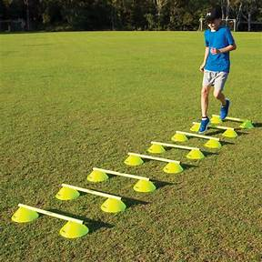

Training Programs
Explore our comprehensive football training programs designed to enhance skills and performance on the field.
Speed and Agility Training
Our Speed and Agility Training program focuses on improving players' quickness, agility, and overall speed on the field. This program includes specialized drills and exercises to enhance acceleration, deceleration, and change of direction.
Strength and Conditioning
Develop your strength, power, and endurance with our Strength and Conditioning program. Our certified trainers design personalized workouts to improve players' physical fitness, prevent injuries, and enhance overall performance during matches.

Technical Skills Mastery
Master the technical aspects of football with our Technical Skills Mastery program. Players will focus on ball control, passing accuracy, dribbling skills, and shooting techniques. Our experienced coaches provide hands-on training to refine individual skills.